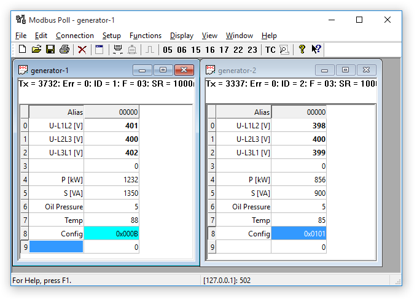
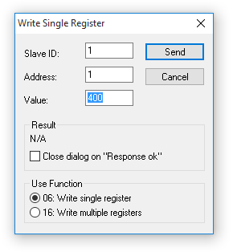

modbus tools
For test, simulation and programming.
Modbus Poll quick start guide
Overview
Modbus Poll uses a multiple windows user interface. That means you can open several windows showing different data areas or data from different slave ID's at the same time. You can write any text in the Alias cells.
In any dialog box you can press the F1 key for more help on that specific topic.
This picture shows two open windows one reading 10 holding registers from ID 1, address 0 and one reading 10 holding registers from ID 2.
|  | If your slave device allows you to change a Holding register then you double click the cell or just start typing a new value in the cell. Then an edit dialog box is shown. |
Change the read/write definition
To change the read/write definition of a window you can press F8 or select "read/write definition" from the Setup menu.

 |
Here you define which data to show in the window. This setup shows how to read 10 Holding Registers from address 0. Address 40001 in some protocol descriptions. Note that Modbus Poll uses Modbus addresses which always counts from 0. |
| Device address | MODBUS address | Description | Function | R/W |
|---|---|---|---|---|
| 1...10000* | address - 1 | Coils (outputs) | 01 | Read/Write |
| 10001...20000* | address - 10001 | Discrete Inputs | 02 | Read |
| 40001...50000* | address - 40001 | Holding Registers | 03 | Read/Write |
| 30001...40000* | address - 30001 | Input Registers | 04 | Read |
How to make a connection
There is no data to display if you have not made a connection. To do so press F3 or select connect from the connection menu. For more detailed help press F1.
 |
This connection use Modbus TCP/IP. 5 different connection types are available however only 2 of them are standard Modbus connections:
For serial connection you may need an USB to RS485, or an RS232 to RS485 converter. |